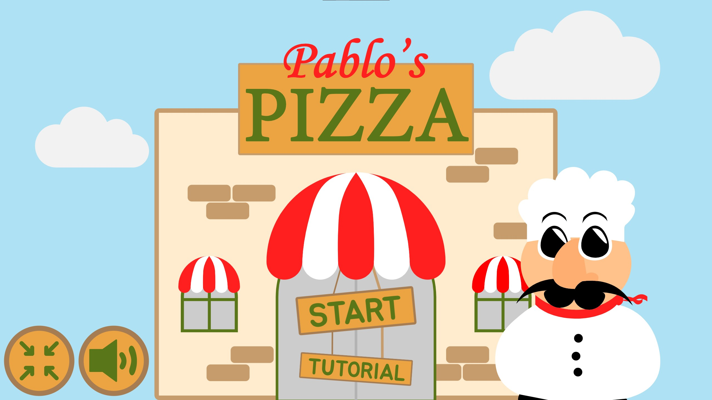

Animation
Temaet animation var introduktionen til at arbejde med JavaScript og i kombination med dette samt html og css, var det endelig projekt at designe, kode og programmere et spil.
Idé og papirprototype
Som det første i processen at designe et spil, skulle vi finde en idé at gå med. Givet der var visse regler for selve spillets mechanics der basalt omhandlede at trykke på enten rigtige eller forkerte elementer, kom jeg til at tænke på debatter om irrelevante ting, hvor folk alligevel formåede at have stærke holdninger, f.eks. hvordan toiletpapir skal hænge samt hvad der kvalificeres som sandwich og suppe.
Fra det udgangspunkt endte jeg på det 21. århundredes største debat: ananas på pizza. Dette blev således omdrejningspunktet for spillet Pablo's Pizza.
Herfra lavede jeg en prototype af papir der simulerede selv spillets storyboard.
SE PAPIRPROTOTYPEDesigndokumentation
I starten af temaet lærte vi om karakterdesign, skitsering og Adobe Illustrator, således vi var i stand til gennem netop det program illustrere vores egne vektorgrafiske karakterer samt andre elementer til spillet.
Spillets karakterer og elementer skulle passe til den initielle idé og koncept til spillet fra den første dags prototype.
Figurerne tegnedes efter flere skitser på papir ind i illustrator, hvorefter Pablos figur blev rentegnet og revideret flere og flere gange for at fange præcis din essens, som ville passe til spillet.
Spillets design er primært baseret på runde og bløde former, udover ananasserne, hvilke dog er runde i fason, men hvis højblade er skarpe og kantede, idet de er spillets antagonister og derved adskilles fra de resterende venlige figurer.
SE DESIGNDOKUMENTATIONPablo's Pizza
Efter at have trænet vores JavaScript-evner gennem diverse opgaver under forløbt og at have lavet et aktivitetsdiagram samt State Machine Diagram, begyndte selve kodningen og programmeringen af spillet.
Til figurelementerne anvendtes containers og sprites for at muliggøre mere avanceret animation i form af både ekstern bevægelse af figuren samtidigt med intern ændring af figuren. Det involverede primært en animation, der fik en elementer til at flyve ud, når de blev klikket, hvilket var på spriten, mens det initielle falde animation gennem skærmen påvirkede containeren.
Da spillet var færdigt i første omgang, udstilledes alle spillene i en digital fernisering, således vi kunne teste, vurdere og hjælpe andre med deres spil. Derfra kunne spillet således ændres alt efter feedback fra andre studerende.
Derfra var det endelig spil færdigt: Pablo's Pizza, der omhandlede et pizzeria angrebet af vrede ananasser med formålet at kontaminere pizzaerne. Målet er derpå at fjerne ananasserne inden de når bunden af skærmen og ødelægger Pablos karriere og ry som kok.
 SE SPILLET